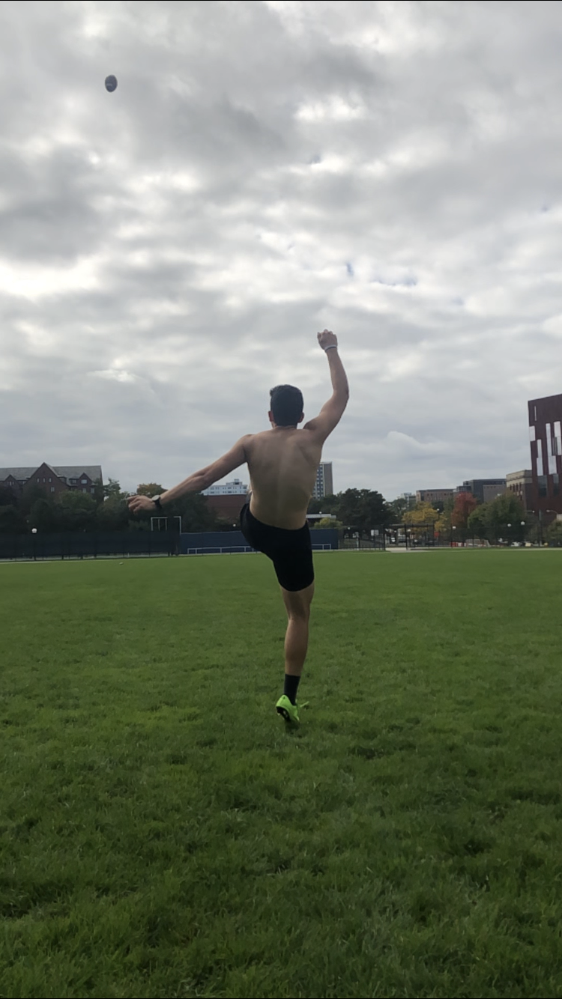
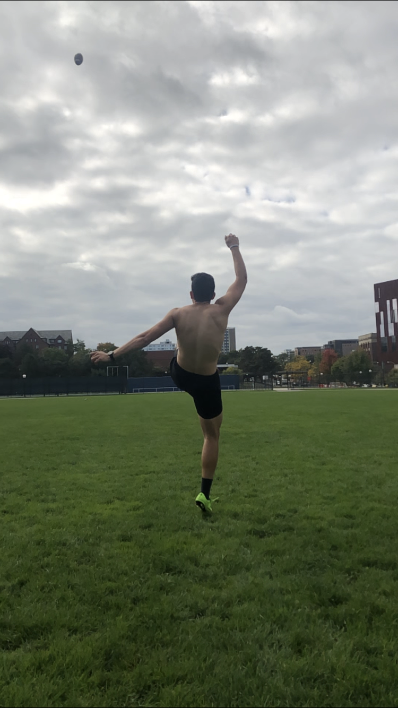
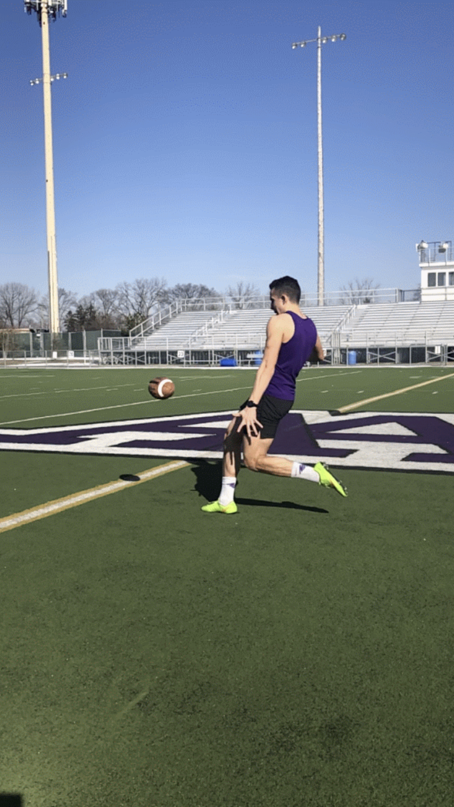
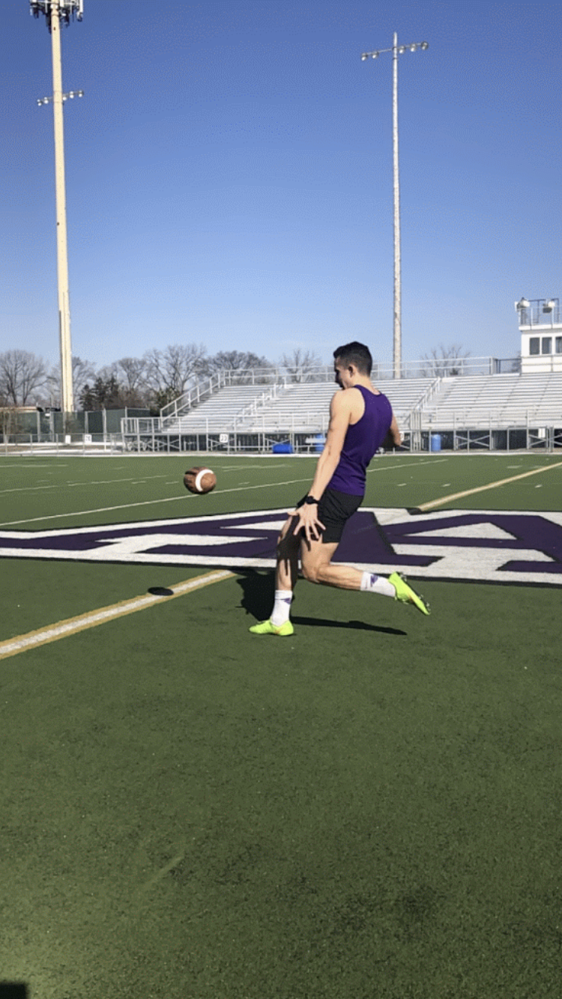

Punting / Special Teams
I'm extremely passionate about football, particularly punting. I played two years of football in high school, three semesters (and counting!) of intramural flag football, and I've spent two seasons coaching kickers and punters at my alma mater, Ann Arbor Pioneer High School. I focus most of my attention on punting. I'm a lefty and I average about 45 yards and 4.1 seconds of hang time. My good punts go 50+ with 4.5-4.6 seconds of hang time.
Below, you'll find a gallery of various action shots of me punting and kicking.
 

 

Reading
For the first time since middle school, I've finally taken up leisurely reading once more, and I'm glad I have. I'm very much into books on self-betterment. Some books I've read this year include Carol Dweck's Mindset, John Maxwell's 15 Invaluable Laws of Growth, David Goggins' Can't Hurt Me, and Daniel Pink's When: The Scientific Secrets of Perfect Timing. As of writing this, I'm reading Charles Duhigg's The Power of Habit.
Unicycling
My freshman year, my friend-turned-suitemate Vincent and I decided to learn to unicycle over the summer. I'm not great at it, but I can hold my own for some distance and I've made more friends this year who unicycle, so I'm looking forward to my continued improvement.